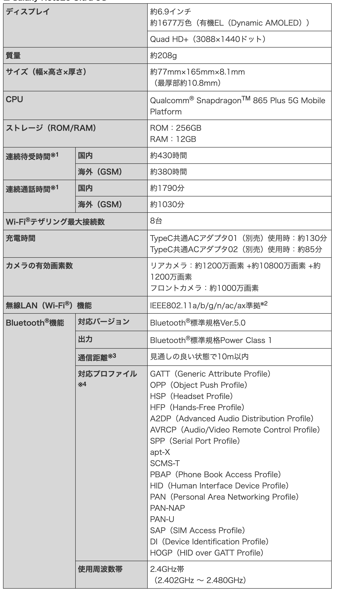
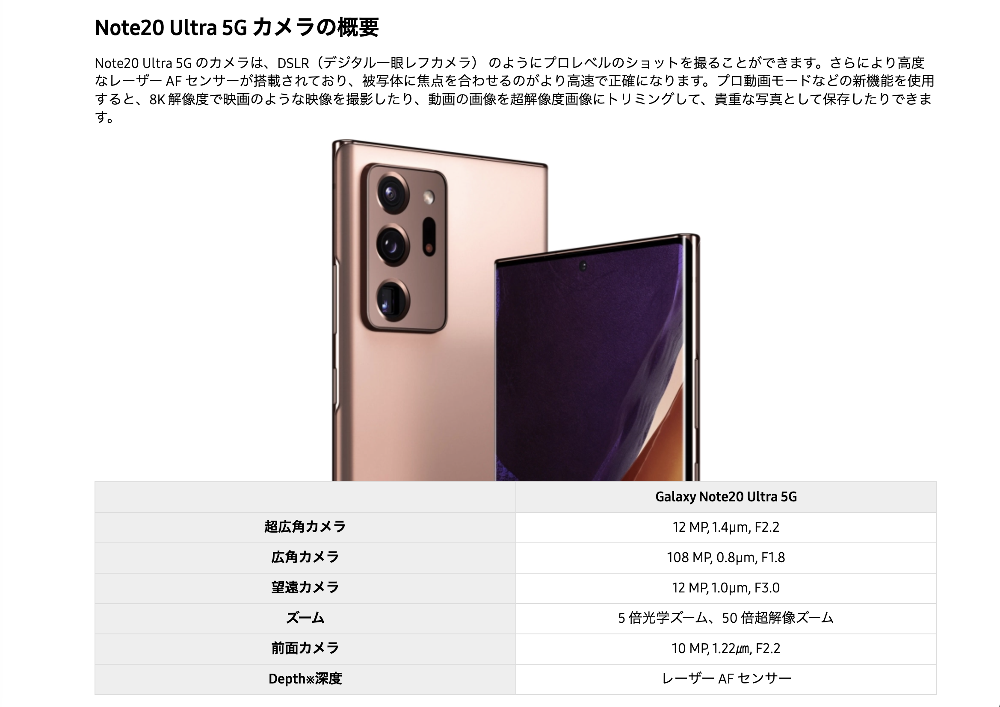
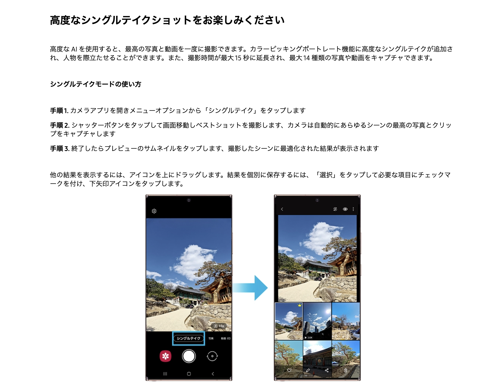
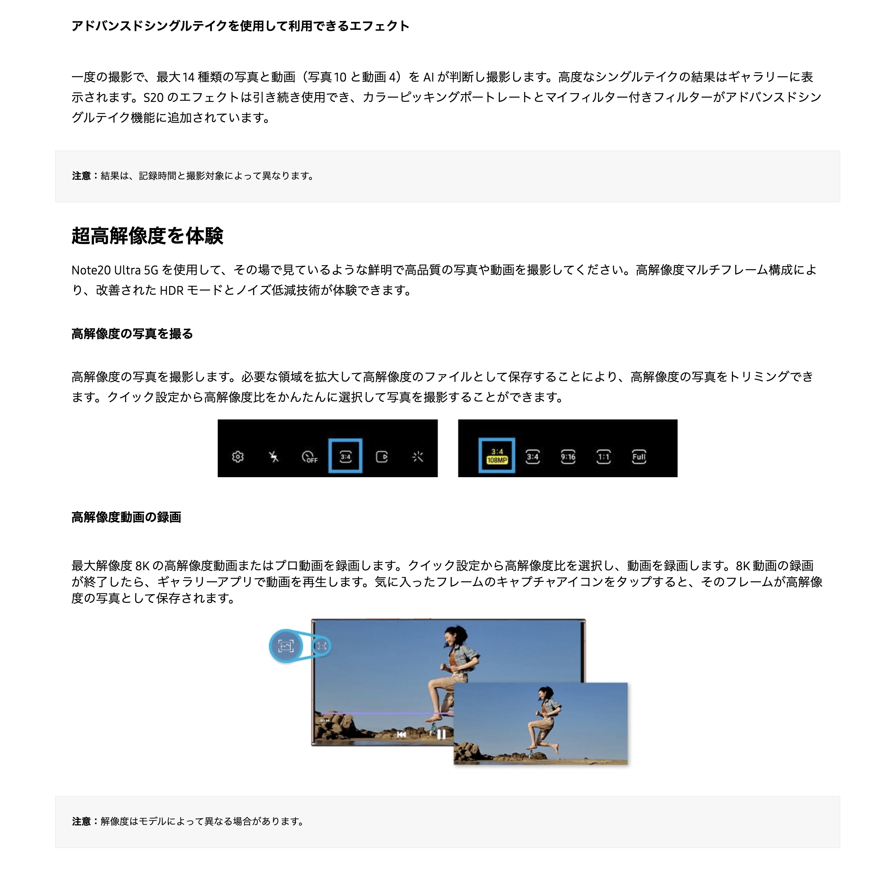
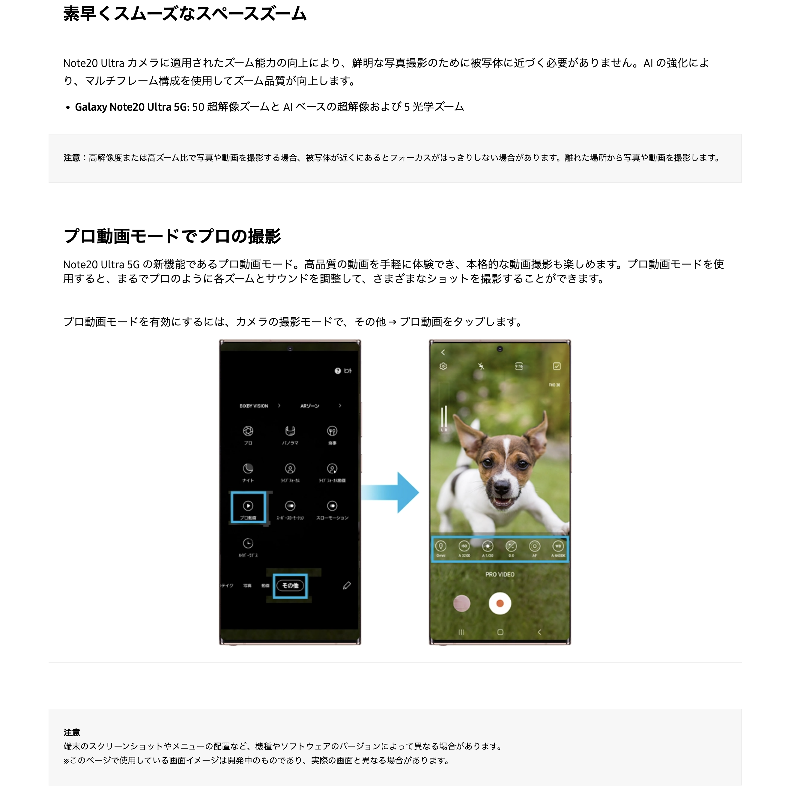

2023.04.29 更新
[遅めの紹介]Galaxy Note 20 Ultra!!

スマートフォンは、現代社会において欠かせない携帯電話の一種で、様々な機能を備えています。最近のスマートフォンは、高度な処理能力や大容量のストレージ、高品質のカメラ、高解像度のディスプレイなどを備えており、様々なニーズに対応できるようになっています。スマートフォンは、通話やメッセージング、メールの送受信といった基本的な機能に加えて、インターネットに接続して検索やSNSの閲覧、オンラインストリーミングなどが可能です。また、GPS機能を利用して、地図アプリでのナビゲーションや、フィットネスアプリでの運動管理などにも活用されています。スマートフォンには、様々なアプリがあります。その中には、生産性を高めるためのものから、エンターテインメントやゲームまで多種多様なものがあります。例えば、タスク管理アプリやノートアプリは、仕事や勉強の効率を高めるのに役立ちます。また、音楽や動画を楽しむためのアプリや、ゲームアプリは、ストレス発散やリラックスに役立ちます。一方で、スマートフォンの使用による問題もあります。長時間の使用による目の疲れや、首や肩の痛み、手首の痛みなどの身体的な問題が挙げられます。また、スマートフォン中毒や、ネットいじめやオンライン詐欺などの問題もあります。適切な使い方を心掛け、バランスのとれたライフスタイルを送ることが重要です。
| Auでの値段

Galaxy Note 20 Ultraの販売価格など
▼Auでの「Galaxy Note 20 Ultra」販売価格
15万9830円
| Galaxy Note 20 Ultraのスペック
引用:https://www.au.com
| Galaxy Note 20 Ultraのカメラ性能
   引用:https://www.samsung.com/jp/support
| Galaxy Note 20 Ultraの良かった点
120Hzで画面がとても大きいのでダイナミックな映像を楽しむことができました。スピーカーが片方にあるので音が悪いと思ったのですが、まさかの音が良かったです。
| Galaxy Note 20 Ultraの悪かった点
バッテリー🪫の持ちが悪いため、旅行などの長時間携帯を触るときは途中できれて道に迷って迷子にならないために、モバイルバッテリーを一つ持っていくと安心かもしれませんね。